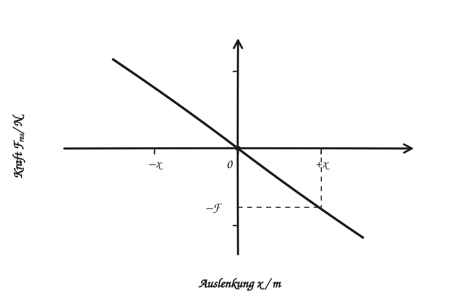
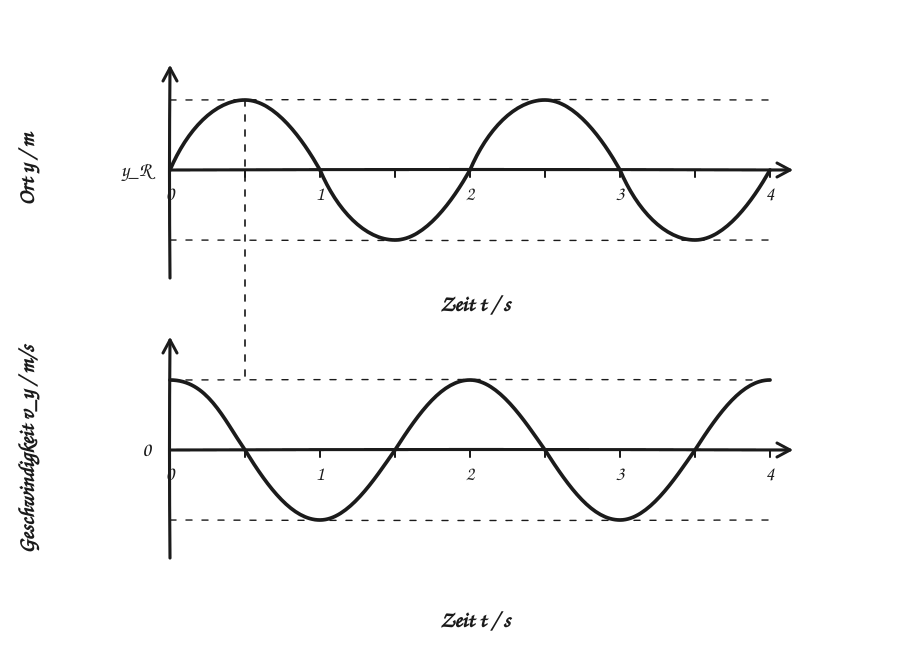

Federpendel · Selbstlerneinheit
Das Zeitgesetz selbst entdecken
Beginne mit der Kraft. Wähle danach den Weg über deine Videoanalyse oder über eine einfache mathematische Idee.
Wann ist eine Schwingung harmonisch?
Eine Schwingung ist harmonisch, wenn die rücktreibende Kraft mit der Auslenkung wächst und immer zur Ruhelage zeigt. Der Zusammenhang ist linear:

Beim Federpendel liefert das Hookesche Gesetz diese lineare Kraft. Bei einem vertikalen Aufbau ist in der Ruhelage die Gewichtskraft bereits durch die Federkraft ausgeglichen. Für die Bewegung um diese Lage bleibt \(F_{\mathrm{res}}=-D\,x\). Das gilt, solange die Feder im linearen Bereich arbeitet; Reibung lassen wir zunächst weg.
Wähle deinen Weg
Weg 1 · Videoanalyse
Von Messkurven zum Zeitgesetz
Halte deine Viana-Diagramme \(y(t)\) und \(v_y(t)\) bereit. Die Skizze zeigt nur die typische Form einer idealen Schwingung, keine Messwerte eures Versuchs.
Von \(y\) zu \(x\)
Viana nennt die vertikale Position \(y(t)\). In unserer Formelsammlung heißt die Auslenkung von der Ruhelage \(x(t)\). Wähle die positive Richtung von \(x\) wie bei Vianas \(y\). Dann gilt \(x(t)=y(t)-y_{\mathrm{R}}\), wobei \(y_{\mathrm{R}}\) die Position der Ruhelage ist. Die Geschwindigkeit heißt dann \(v(t)=v_y(t)\). Bei umgekehrter Achsenrichtung wechseln beide Vorzeichen, die Schwingungsdauer bleibt gleich.
Was verraten die beiden Kurven?
In \(y(t)\) suchst du die Ruhelage \(y_{\mathrm{R}}\), zwei aufeinanderfolgende Maxima und den größten Abstand zur Mittellinie. So erhältst du \(T=t_2-t_1\) und \(\hat{x}=(y_{\max}-y_{\min})/2\). Nutze für \(y\) die Einheit deiner Viana-Achse. Bei einer idealen Schwingung liegt \(v_y(t)\) um ein Viertel der Schwingungsdauer versetzt: An den Umkehrpunkten ist die Geschwindigkeit null, beim Durchgang durch die Ruhelage am größten.

Eine Sinuskurve beschreibt die Messung
Eine passende ideale Modellkurve lautet \(x(t)=\hat{x}\sin(\omega t+\varphi_0)\). Dabei ist \(\omega t+\varphi_0\) der Phasenwinkel. Nach einer ganzen Schwingung hat er um \(2\pi\) zugenommen. Deshalb ist \(\omega=2\pi/T\). Der Wert \(\varphi_0\) beschreibt, an welcher Stelle der Schwingung die Videoaufnahme bei \(t=0\) beginnt.
Zur Sinuskurve passt eine Kosinuskurve für die Geschwindigkeit: \(v(t)=\hat{x}\,\omega\cos(\omega t+\varphi_0)\). Das erklärt die Verschiebung zwischen euren \(y(t)\)- und \(v_y(t)\)-Diagrammen.
Von der Krümmung zur Wurzel
Aus der Steigung eurer \(v_y(t)\)-Kurve könnt ihr die Beschleunigung ablesen. Bei positiver Auslenkung zeigt sie zur Ruhelage, also in die negative Richtung. Für eine Sinusschwingung gilt \(a(t)=-\omega^2x(t)\). Das Federpendel hat nach Newton und Hooke zugleich \(a(t)=-(D/m)x(t)\). Beide Aussagen beschreiben dieselbe Bewegung. Daher muss \(\omega^2=D/m\) gelten.
Was macht die Anfangsphase?
Die Form der Kurve kann gleich bleiben, obwohl eine andere Aufnahme zu einem anderen Zeitpunkt startet. Genau dafür steht \(\varphi_0\). Beginnt die Zeitmessung beim Durchgang durch die Ruhelage in positiver Richtung, ist \(\varphi_0=0\). Startet sie am oberen oder unteren Umkehrpunkt, braucht das Zeitgesetz eine andere Anfangsphase.
Dein Ergebnis aus den Messkurven
\(x(t)=\hat{x}\sin(\omega t+\varphi_0)\) beschreibt die Auslenkung. \(\omega t+\varphi_0\) ist die Phase; \(\varphi_0\) legt den Start fest. Ein Umlauf braucht \(2\pi\) Radiant, daher \(T=2\pi/\omega\). Die rücktreibende Kraft führt zu \(\omega^2=D/m\), deshalb \(T=2\pi\sqrt{m/D}\). Die Sinusfunktion passt, weil ihre zweite zeitliche Ableitung wieder dieselbe Kurve mit umgekehrtem Vorzeichen ergibt.
Weg 2 · Vereinfachte Mathematik
Eine passende Funktion finden
Wir lösen keine DGL Schritt für Schritt. Wir probieren eine Funktion aus und prüfen, ob sie die Bewegungsgleichung erfüllt.
Kraft wird Beschleunigung
Hooke sagt \(F_{\mathrm{res}}=-D\,x\), Newton sagt \(F_{\mathrm{res}}=m\,a\). Zusammen ergibt das die Bewegungsgleichung \(m\,\ddot{x}(t)=-D\,x(t)\). Der Punkt über \(x\) bedeutet eine zeitliche Ableitung; zwei Punkte stehen für die Beschleunigung.
Warum ausgerechnet Sinus?
Wir probieren \(x(t)=\hat{x}\sin(\omega t+\varphi_0)\). Beim ersten Ableiten entsteht eine Kosinusfunktion: \(v(t)=\hat{x}\,\omega\cos(\omega t+\varphi_0)\). Beim zweiten Ableiten entsteht wieder der Sinus, aber mit Minuszeichen:
Genau diese Form verlangt die Bewegungsgleichung: Beschleunigung und Auslenkung sind proportional und haben entgegengesetzte Vorzeichen.
Woher kommen Wurzel und \(2\pi\)?
Die Bewegungsgleichung fordert den Faktor \(D/m\); beim Sinusversuch steht dort \(\omega^2\). Darum gilt \(\omega^2=D/m\) und für die positive Kreisfrequenz \(\omega=\sqrt{D/m}\). Ein Sinus wiederholt sich nach einer Winkeländerung von \(2\pi\). Die Zeit dafür ist \(T\), also \(\omega T=2\pi\).
Was bedeuten \(\omega t\) und \(\varphi_0\)?
\(\omega t\) ist der Winkel, den die Schwingung seit \(t=0\) durchlaufen hat. Addiert man \(\varphi_0\), erhält man die Phase \(\omega t+\varphi_0\). Die Anfangsphase \(\varphi_0\) verschiebt die Kurve: Sie bestimmt Startort und Startrichtung. Für \(x(0)=0\) und anfänglich positive Geschwindigkeit ist \(\varphi_0=0\).
Dein Ergebnis aus der Bewegungsgleichung
\(x(t)=\hat{x}\sin(\omega t+\varphi_0)\) löst \(\ddot{x}=-(D/m)x\), weil zweimaliges Ableiten \(-\omega^2x\) ergibt. Der Vergleich liefert \(\omega=\sqrt{D/m}\): Daher steht im Gesetz für \(T\) eine Wurzel. Eine vollständige Phase umfasst \(2\pi\), daher \(T=2\pi/\omega\). \(\omega t\) ist der seit dem Start durchlaufene Winkel, \(\varphi_0\) der Winkel zu Beginn.